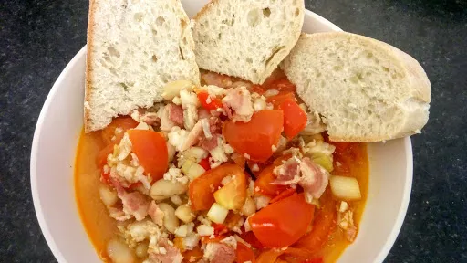

Italian cod and bacon stew

Italian fish stew with a hint of spice. Find some good crusty bread to serve with this dish. Gluten-free: make sure the fish stock cubes are GlutenFree.
Servings: 4
Total: 20 mins
Ingredients
x0.5
x1
x2
x3
1 1 4 6 6 2 2 1 400 1 4 2 Crusty bread , to serve
Instructions
Heat the oil1 tbsp
in a large pan or wok. Add the pepper1
and bacon4
and fry until brown. Season well with salt and pepper1
.
Add the spring onions6
, tomatoes6
and garlic2 cloves
and fry for 1 minute.
Add the paprika2 tsp
, saffron1 pinch
, beans400 g
, water1 mug
and fish stock and bring to the boil. Add the cod4
and simmer gently for 3-4 minutes,or until the cod4
is cooked.
Stir in the coriander2 tbsp
and serve with crusty bread.
Nosh: Quick & Easy
Short Link
Long Link

 Gluten Free
Gluten Free